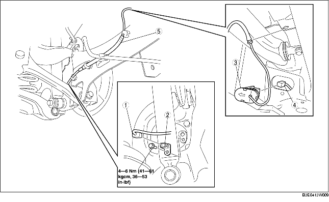

1. Verwijder het onderpaneel (achter).
2. Verwijder de onderdelen in de aangegeven volgorde, zie de tabel.
3. Plaats de onderdelen in omgekeerde volgorde.

.
1. Neem de stekker van de rijniveausensor achter los. (Uitvoeringen met rijniveausensoren)
2. Druk op de lip van het afdekplaatje om het afdekplaatje los te maken.
3. Verwijder het afdekplaatje van de carrosserie.
1. Plaats de bedrading van de wielsensor op de aangegeven manier bij de parkeerremkabel achter.
2. Plaats de bedrading van de wielsensor achter.
1. Plaats het afdekplaatje met de pijl in de richting van de buitenkant van de auto.